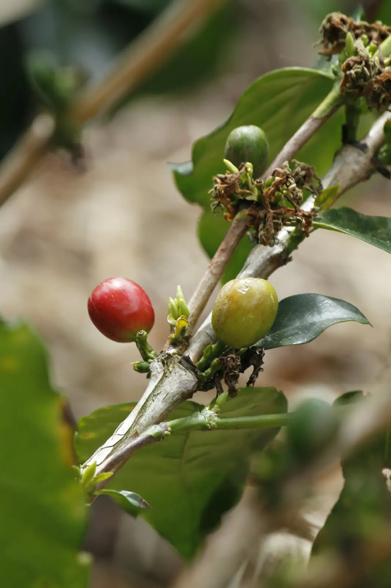
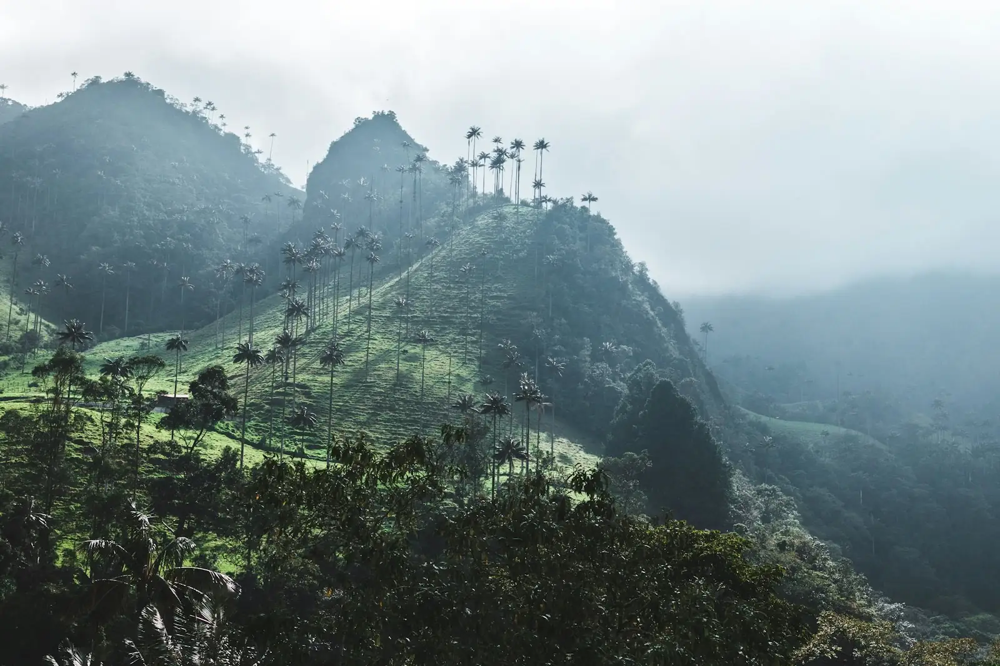

Del grano a la taza
Recolección, secado, tostión y cata con una familia cafetera.

Montañas sembradas de café, pueblos de bahareque y fincas donde el día empieza con una taza recién hecha.
El Paisaje Cultural Cafetero de Colombia es Patrimonio Mundial de la UNESCO desde 2011. Reconoce una forma de vida: familias que cultivan café en laderas empinadas desde hace generaciones y pueblos con arquitectura de colores.
Te llevamos a fincas donde los productores te enseñan su oficio, a pueblos como Filandia y Salento, y a paisajes como el Valle de Cocora. Dormir en una finca es parte del viaje.

Recolección, secado, tostión y cata con una familia cafetera.
Pueblos de balcones de colores y miradores.
Casas tradicionales rodeadas de cafetales.
Aguas termales, avistamiento de aves y jardines botánicos.